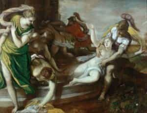
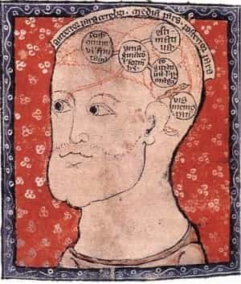

< < < Back
An Introduction To The Study Of Certitude (Criteriology) – Return Of Kings
Greetings to the men of ROK in the joyful season of Paschaltide. This week, we’ll look ahead to the continuation of our philosophical series.
Though Cardinal Mercier’s manual discusses Cosmology next, we will be proceed to Criteriology, or Epistemology. I have judged this to be the best course of action, because one of my chief goals in this series on philosophy, is to dispel the notion that man can never be sure of the truth he knows—this idea is central to our relativism, our nihilism and the thoroughly incoherent principles of Liberalism which pull our society apart.
I intend to demonstrate that man may have certainty of God’s existence, and of many other truths as well; once these are known, we can confidently act upon them, dispensing with the rubbish that we are “imposing our opinions” on other people. We do the world a service in displacing the hegemony of Liberalism’s absurdity with Patriarchy’s hegemonic truths, for which the people should thank us (though I wouldn’t hold my breath).

Sometimes people don’t appreciate what you do for them.
In hindsight we will see that the West’s late-stage Liberalism was just a rationalization employed to justify a more convenient neglect of truth. I believe some men proposed the incoherent principles knowingly, in an attempt to destroy the Christian order with goals of erecting another in its place; but the masses accepted it because it legitimizes man’s general preference for inertia and soothes the conscience in its choice to be something less than it can (and ought) to be. For those who may object that this sounds like just another Liberal wish to “fix” the benighted rubes of society, I’ll say that it is not, because we do not embrace the incoherence of Liberalism, nor do we attempt to make incoherence’ “perfection” the enemy of incoherence’ good.
I therefore don’t intend to convince the masses through reasoned debate (nor should you), precisely because nobody accepts Liberalism on rational grounds, least of all the mass man; the favour shown to these ideas is rooted in vice and the deformity of the intellect through the passions. But for the men who are clawing themselves out of the pit, and who may form a future elite some day, or who at least aspire to be high-functioning members of a saner, post-collapse society, hopefully this contribution will serve as an elementary dose of cult de-programming from the Liberalism we have imbibed with (lamentably) our own mothers’ milk.
The fields of Criteriology and Epistemology bear directly upon this. What are they? Cardinal Mercier defines Criteriology as “the reflex study of our certain knowledge, and of the grounds, upon which certitude rests.” Criteriology comes from the Greek κρίνω (krino), meaning “I judge,” because any assertion of certitude is founded upon a judgment (as we’ll see, if it’s not already clear).

If we refuse to judge and discriminate, there is neither anything to teach nor anything to learn.
The science is also known as Epistemology, from Greek ἐπιστήμη (episteme), meaning “knowleldge,” especially “skillful knowledge” rooted in focus and experience. In discussing the broader science to which this field belongs, Cardinal Mercier rejects the fuzzy idea gaining popularity in his day (and still prevalent), that sought to subject this to the science of Logic, sometimes calling it “real logic” (as Kant did). But logic properly studies Being only as it exists in the mind (i.e., the attributes with which the action of the mind vests considered objects), whereas Metaphysics is the science of Being itself. Criteriology studies a correspondence between these things, inhering as a property in the act of knowledge, “hence it is directly connected with ideology and thus with psychology.”
As an aside, I’ve been interested to see how many terms have changed their meanings since their separation from the integrated whole of the Western tradition of learning a century ago. “Psychology,” as Mercier uses it, is the science of all living creatures (psyche, soul, being the principle of life); expanding secularism and specialization broke this up into many fields.
Man’s rational soul, as the highest type of soul, was the subject of Psychology par excellence; but with the advent of Freud and other alien, hostile influences, psychology was coopted to spread the subversive propaganda that man does not have a rational soul at all, but is simply a beast with an highly developed rationalization-machine in his head. And indeed many men behave this way, which gave credence to this idea; but when Western society promoted the higher ideal, many men lived up to it and proved it true. Having now abandoned the concept, many fail to do anything beyond the level of animal activity—eat, sleep, sex—which was the goal of advancing the degenerate concept in the first place.

“Midas, on account of the obtuseness of his judgment, is doomed to grow the ears of an ass.”
Some Terms And Ideas We Will Examine
Cardinal Mercier defines certitude (which is the object of Criteriology’s science) as “the state of the human mind, when it recognizes that it knows the truth.”
Now, to quote Pilate: “What is truth? ”
Judgment or certitude of truth implies a relation between two terms—a term in itself or conceptualized, and an idea already present in the mind (even Christ, The Truth, is the Hypostatic Wisdom of the Father). The Cardinal explains that nobody speaks of a term as “true” in absolute abstraction from this relation (i.e., “one thousand seven hundred and twelve is so true, man”—something that could make sense relative to solving a math problem, but is nonsense in absolute abstraction). We often describe things as real or true (“he’s a true friend”), and we often predicate truth of our knowledge of things (“it is true that four right angles contain 360 degrees between them”). When we speak of truth as an attribute of a thing, this is concerned with objective or ontological truth. When we speak of truth as an attribute of our knowledge of things, this is dealing with logical or subjective truth.
Objective Or Ontological Truth
This is NOT to deny the objective element in truth; it simply acknowledges that the judgment or assertion of truth, implies a relation between two things: the objective and subjective elements. Specifically, this relation is one of real, congruous agreement.
In fact, this brings us to St. Thomas’ definition of truth: Veritas est adaequatio intellectus et rei (“truth is an adequation of intellection and res). “Adequation” means “an exact correspondence or conformity.” “Intellection” is the act of perceiving with understanding, roughly equivalent to Greek νοήσις (noesis). Some people translate res as “thing,” but in English a “thing” is usually a material object, whereas the Latin res is any thing or idea, material or immaterial. So, truth is present when the mind’s idea and another res (thing or idea in itself, or conceptualized, etc.) correspond to one another in an exact way. Objective truth, then, is the part played by the res.
Subjective Or Logical Truth
Therefore, “subjective truth” does not here mean “personal” (i.e., untrue) truth, as it does in a Modernist’s mouth. Rather, we use the term here to denote the perception of truth in the mind. Speaking of the adequation of intellect and res, or truth, the Cardinal says: “to assert that this relation is present, is to formulate a judgment.” So, subjective truth is the nature of a judgment, in which there is an objective conformity on the part of the res to the judgment of the mind; it is the role of intellection, and exists only when the mind’s judgment conforms to the objective truth or reality of a res; when the mind’s judgment does not so conform, we reject the idea that it is “true” in any sense. His judgment is not “subjectively” true (for him), it is simply false.

The point, here, is twofold: 1) I am beating the dead horse, that “subjective truth” does not mean “personal opinion,” as it does for Liberals; subjective truth is the true perception and assertion of accord with an objective truth, in/by the mind; 2) this goes beyond the mere level of perception, or even of assent; it involves a deliberate judgment of the mind.
Those are the preliminaries to the discussion; and there are many implications and assumptions to address. Next week we will start to get into the meat of it, exploring whether man can be certain in his knowledge of any truth. In the meantime, don’t forget…
Surrexit Dominus vere, alleluia!
I regret not getting to say more about Easter this year; this is my first year of keeping up the whole cycle of services in the Latin Rite, and I’ve been deeply moved by them. So, in lieu of more thorough posts on Easter, I may just leave you with some tidbits of Easter traditions at the end of posts.
This year, while looking for land in Central and Southern America, I was reminded of some of the Holy Week and Easter celebrations that are common in Spain and many countries evangelized by Spain. Here is the “Encuentro Glorioso,” where the appearance of our Lord to His mother on the morning of the Resurrection is re-enacted by a procession early on Easter Sunday. The pasos (biers) are moved close together and swayed, to represent the joy at the meeting.
Their joy, already great for Easter, is better understood when you know some of the surrounding traditions. As a gesture of repentance, folk voluntarily donned the conical dunce’ cap imposed on public sinners and criminals in the Middle Ages (but with a veil, so their penance would not be an occasion for pride; this is the garb of the Nazarenos). They accompanied images of the sorrowing Virgin, or of Christ during the events of His last days and hours, to and from the Cathedral, barefoot (some still do this). They pour their heart and soul into making these images and processions beautiful. Here is the sorrowing Virgin of the La Hiniesta brotherhood, exiting her church on the 450th anniversary of that brotherhood (skip to about 2:30).
Some of these processions can last as many as 14 hours. Often the Virgin of Easter morning has been one of the sorrowing Virgins on procession earlier, but with her mantle changed from penitential colors to white.
Some of these images are very old, and are interwoven with the history of the people, which has often been bitter in recent centuries; I respect the people of Seville for not giving up on their traditions. The brotherhood based out of the Sailors’ chapel (Esperanza de Triana) had their Church stolen by Napoleonic Revolutionaries and handed over to Anglicans, then turned into a bar and brothel.
Revolutionaries and the Civil War destroyed many chapels and their images in the 20th century, and just a few years ago processional brotherhoods were threatened with graffiti on their buildings promising “ardereis como en el treinta y seis” (“you will burn just like in 1936”). Understandably, then, the people of Triana show their love very plainly as their image is escorted back into the Sailors’ chapel (restored as a Catholic Church in 1954) on the somber day of Good Friday. And their band, the Banda del Santíssimo Cristo de los Trés Caídos, is the best of all the processional brass bands at present. There are moments of real virtuosity by the trumpeters, as well as by the man who sings a solo at the end. The first half of this video is a bit slow, but from the lift at 18:00 and onward, it is touching to watch.
This is just a last remnant of what the culture of Europe and Christendom can be like, when vacuous and ugly ideologies are not withering all our beauty. When Holy Week comes around next year, one could do worse than to watch some of the many videos of these great processions, or to try to start a similar one near you.
Read More: On Impiety And The Passion Of The Lord